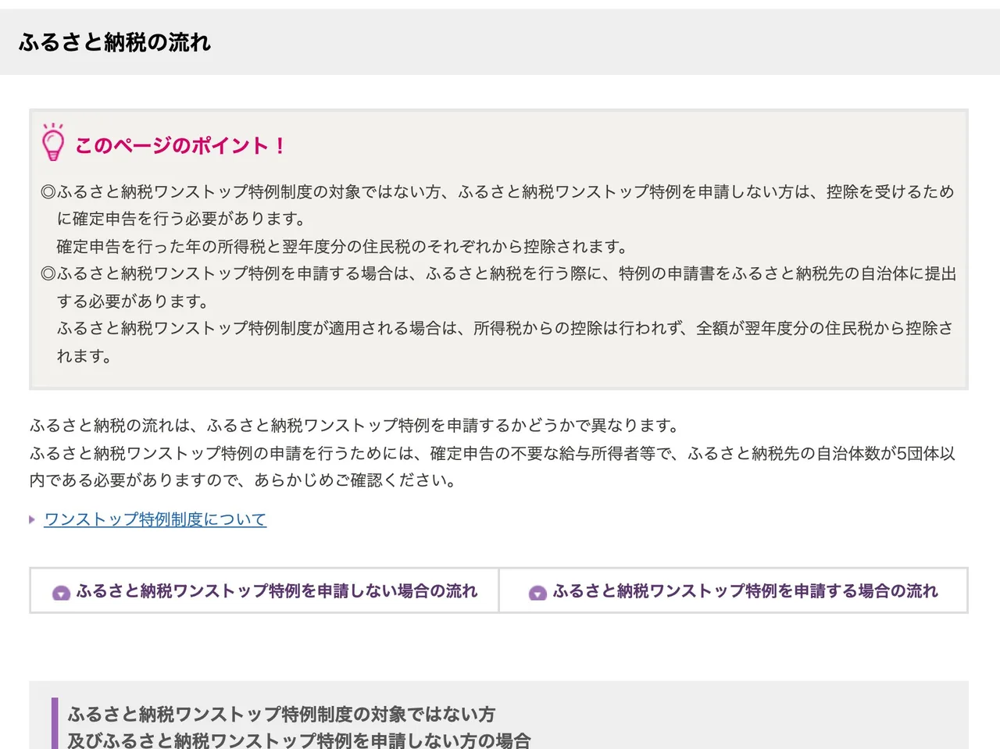

2026年分のふるさと納税は、12月31日23時59分までに寄付の決済を完了すると、今年分としてカウントされます。控除を受けるための手続きは、ワンストップ特例を使うか確定申告をするかで変わり、ワンストップ特例の申請書は翌年1月10日必着、確定申告は翌年3月15日までです。この記事では、年内から年明けにかけてやることを、総務省などの公式情報にもとづいて整理します。
01年内の締切は12月31日23時59分
ふるさと納税は、毎年1月1日から12月31日までが寄付の対象期間です。2026年分として税金の控除を受けるには、2026年12月31日23時59分までに寄付金の決済を完了する必要があります。
| 手続き | 期限 |
|---|---|
| 寄付（決済） | 2026年12月31日23時59分まで |
| ワンストップ特例の申請書 | 2027年1月10日必着 |
| 確定申告 | 2027年3月15日まで |

自己負担となる2,000円は、1回ごとの寄付にかかるのではなく、1年間（1月〜12月）の寄付金の合計額に対して必要です。寄付できる自治体の数そのものに制限はありません。
02ワンストップ特例は、5自治体以内・確定申告が不要な人向け
控除を受けるには、原則として確定申告が必要ですが、確定申告の不要な給与所得者等で、寄付先の自治体数が5団体以内であれば、「ふるさと納税ワンストップ特例制度」を使うと確定申告をせずに控除を受けられます。6団体以上に寄付した場合は、ワンストップ特例は使えず、確定申告が必要です。

ワンストップ特例を使う場合は、寄付をする際に、申請書を寄付先の自治体に提出します。申請書は自治体によって異なることがあり、令和4年中の寄付からは、一部の自治体でマイナンバーカードを使ったオンライン申請もできます。払込用紙の「申請書の送付を希望します」欄にチェックするだけでは手続きは完了しないので注意してください。
注意申請後に引っ越しなどで住所が変わった場合は、寄付をした翌年の1月10日までに、寄付先の自治体へ変更届出書を提出する必要があります。
03ワンストップ特例が使えないとき、使わないときは確定申告
ワンストップ特例の対象外の人や、申請しない人は、寄付をした翌年の3月15日までに、住所地の税務署へ確定申告を行います。確定申告には、寄付先の自治体が発行する寄附を証明する書類（受領書）を添付します。
確定申告をすると、寄付をした年の所得税から控除（還付される場合がある）され、翌年度分の住民税が減額される形で控除されます。一方でワンストップ特例を使った場合は、所得税からの控除は行われず、その分も含めた控除額の全額が、翌年度分の住民税から控除されます。
1月10日までにワンストップ特例の申請書が届かなかった場合、ワンストップ特例は無効になります。その場合も、3月15日までに確定申告をすれば控除を受けられます。
04控除額のしくみ、2,000円を超える自己負担に注意
控除される金額は、次の計算式で決まります。
| 控除の種類 | 計算式 | 上限 |
|---|---|---|
| 所得税からの控除 | （寄付額－2,000円）×所得税の税率 | 総所得金額等の40% |
| 住民税からの控除（基本分） | （寄付額－2,000円）×10% | 総所得金額等の30% |
| 住民税からの控除（特例分） | （寄付額－2,000円）×（100%－10%－所得税の税率） | 住民税所得割額の2割 |
住民税の特例分が、住民税所得割額の2割を超える場合は、特例分＝住民税所得割額×20％となり、3つの控除を合計しても寄付額の全額は控除されません。この場合、自己負担額は2,000円を超えます。
ポイント受けられる控除額の上限は、寄付をする人の収入や他の控除の状況によって変わります。具体的な上限額は、お住まいの市区町村の住民税担当窓口に確認してください。
05まとめ：今日からやること
結論年内にやることは、12月31日23時59分までの寄付です。5団体以内でワンストップ特例を使うなら申請書を1月10日までに、それ以外は確定申告を3月15日までに済ませます。
- 寄付の決済12月31日23時59分まで
- ワンストップ特例の対象確定申告不要な給与所得者等・寄付先5自治体以内
- ワンストップ特例の申請書翌年1月10日必着（寄付先の自治体へ提出）
- 住所変更等の変更届出翌年1月10日まで
- 確定申告翌年3月15日まで（6自治体以上、またはワンストップ特例を使わない場合）
この記事は、2026年11月21日時点の総務省・ふるさとチョイス公式の情報にもとづいています。控除の具体的な上限額や手続きの詳細は、お住まいの市区町村や寄付先の自治体の案内で確認してください。